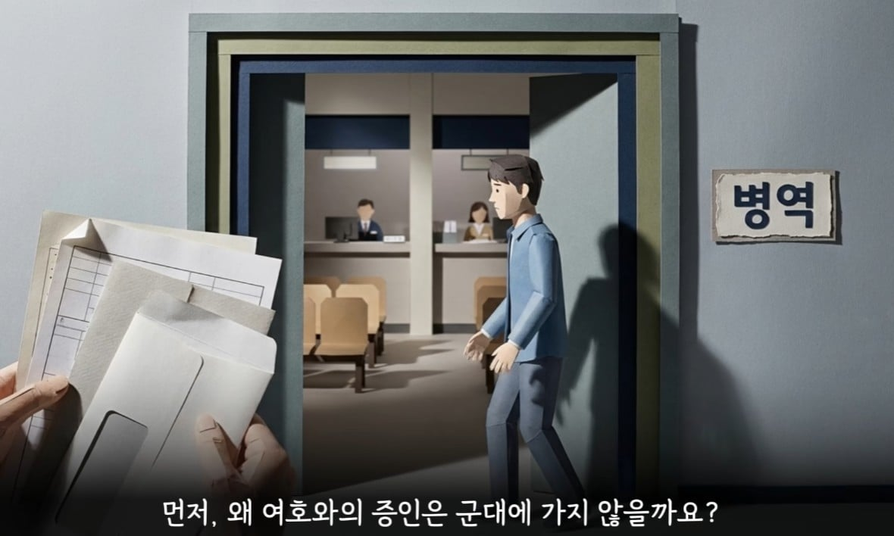
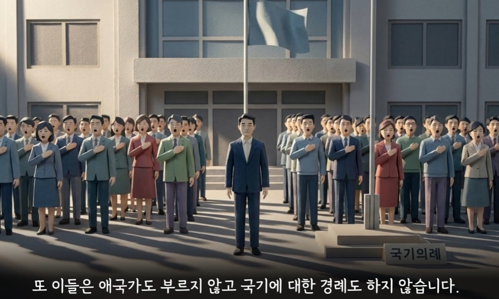
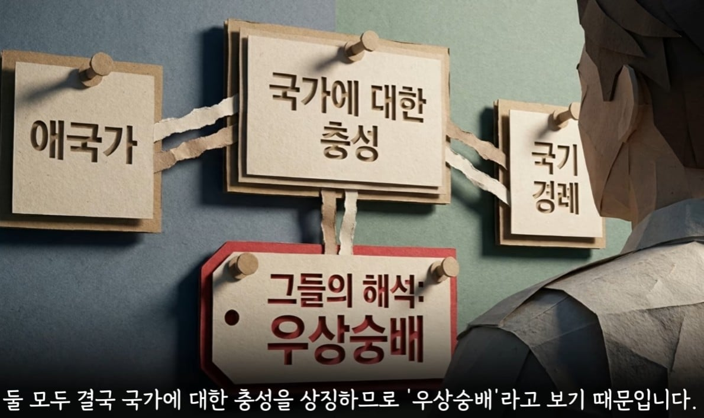
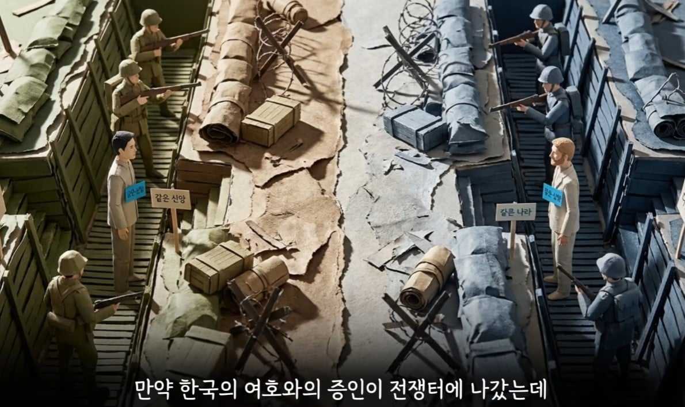

난 살생을 할수 없다 가 이유인지 알았는데 그게 아니네




난 살생을 할수 없다 가 이유인지 알았는데 그게 아니네
걍 궤변론자 들임.
꿈보다 해몽이 어울리는 인간들.
저건 욕 처먹기 싫어서 그나마 덜 욕처먹는 단어로 설명한거고
현대 국가를 사탄의 하수인이나 사탄의 정부랍시고 거부하는거임
즉 시민들의 총의를 실현하려는 국가를 사탄의 국가로 봄으로서 우리가 아닌 타인들은 그저 사탄에 꾐에 빠진 사람으로써 보고 의지가 없다고 무시하는거임
그냥 개좆같은 선민의식임
그런 사탄의 국가 타령하면서 잡혀가기 싫어서 국가 시스템의 일부인 판사나 변호사같은 법조인 양성하려고 하고 있다는 점에서 자기들 입맛에 맞는 종교국가면 상관없다는거임
씨바 그러면 대한민국 복지 떠먹지말고 사막가서 돌아댕기라고
아하 그럼 저기로 가서 사십셔
국가 라는 인프라는 다 누리고 의무는 조시냐?
비폭력 평화주의자 라서가 아님. 소속 때문이지.
그런데 왜 기생충처럼 한국에 붙어 살지
참고로 여호와의 증인은 미국에서 발생한 종교임 마이클 잭슨도 어머니따라서 여호와의 증인이었음
쟤네 교세가 지금 어마어마한거 같던데
대체복무로 일하는 새끼들 빈둥빈둥 처놀아서 살이 돼지마냥 쪄가지고 걱정이 될 정도라 함
그런 새끼들이 뭐 그리 대단하다고 직원들보다 더 우선해서 대우해주고 관리하는지 ㅋㅋ
도대체 뭐 하는 곳이고 뭘 했는지 몰라도 아는 사람만 좀 어떻게 주워듣는거 좀 얕게 들어보면
이 나라가 미친거 같음. 물론 한 쪽 이야기만 들은 것이다만 별 생각 없이 살다가 최근에 이런 이야기 우연히 듣고나니 처우가 좆나 납득안가서 반감이 크게 일더라.
ㄴㄴ 여호와의증인은 정체된지 오래임 옛날부터 한국내의 교인이 10만을 못넘기고있음 너무 교리가 빡셈 군대도 개편해졌는데 군대대신 깜빵가는게 쉬운것도 아니고 성적인 교리도 빡센편이고 담배 피우면 징계 비슷하게 당하고 저 하나님 왕국 소속이라는 얘기도 결국 성경말이 국가말보다 위라는 소리라서 살인 살생 폭력 비스무리한것도 안되서 fps 롤 같은 게임도 못함 평신도가 신부님이나 목사 비슷한 수준으로 지켜야될게 많아서 젊은피 많이 빠지고 유입이 잘안됨
그래? 그런데 대체복무 하는 애들이 왜 이리 많아?
수도 얼마 안되는데 직원 거주지도 마련안해주는 것들이 저런 애들 기숙사부터 짓고 있더만.
음? 대학시절 친구중에 여증있었는데 걔가 군대 안가고 교도소 갔다온 이유가 성경에 무기들지말라는 구절있어서 그렇다고...
그러니까 그게 국가 헌법보다 하나님왕국 성경이 위라는 소리
국적 자체를 거부하는 느낌인데 전재산 몰수해서 국적박탈하고 국외추방해야하는거 아니냐
소설쓰고있구만
적과아군은 공격하면 적이라서 싸우는건데 개소리하고 자빠졋네
이건 뭐 백번양보해서 그렇다치는데 수혈거부는 ㅅㅂ 개 ㅂㅅ같음. 왜냐면 출혈큰 사고당하거나 수술시 수혈안한다고 의사한테 개 ㅈㄹ은 하는데 살고는 싶어서 지혈제인가 약물 ㅈㄴ 투약해달라고 함. 뭐하는 개짓거리인지 모르겠음. 수혈거부면 걍 조용히 뒤지던가 여증은 진짜 교리가 앞뒤가 맞는게 없음. 신도들도 답도 없고
수혈거부도 최근에 갑자기 조건부로 풀어버림
종파 내 고위직이 뒤질 위기가 그런게 아니냐는 썰이 있음 ㅋㅋㅋㅋ
그럴거면 한국에서 나가 니네 왕국가서 살어
뒤져야만 갈 수 있죠~ 느그 나라~
존나 이기적이네 ㅋㅋㅋ 인프라는 다 누리고
기생 하지말고 즈그 왕국 빠른 입겔 바람
저건 국가전복 그런걸로 못잡아가냐?
그냥 깔끔하게 2년 감옥가
일반교회 야금야금 꿀꺽하는 추수꾼 신천지
교주 죽고 내전 중인 통일교
국수먹다 죽은 교주의 영적부인이라며 어머니 하나님거리는 집집마다 찾아가서 신학교 학생인데여~ 해대는 하나님의교회
교주 깜빵 가고 그나마 없어지고 있는 JMS
길거리에 팜플렛 두고 서 있는 여호와의 증인
루키 신천지
망상에 사로잡힌 패배자들의 자기합리와 자기위로 그잡채
그런 논리라면 국가가 필요없다하니 안전망도 제공하지말자 ㅋㅋㅋㅋ 걍 범죄타겟이되어서 당하면 그런가보다~여호와의 뜻이다~ 하고 살아라 경찰찾아가지 말고
종교 믿어도 소용 없음 사후세계는 이순신 장군님이 다 정벌 해놨다
빨리 죽어서 가라
그렇게 국가가 싫으면 무정부 상태인 소말리아 가서 살지
한국에서 정상적인 직업 가지긴 어려울듯..
요샌 대체복무하지 않냐? 교도소에서 3년 근무긴한데.
그럼 니네 나라로 꺼지세요
현실을 살아라 병신들아
정신병
엥 근데 저거 집총거부여서 안가고 대체복무인 교도소나 구치소에서 교도관들 도와주는걸로 하는거 아니었음?
그럼 거기서 살아
남의 국가에서 불법체류 하지말고
그럼 한국 인프라 쓰지말고 좀 꺼져 시발련들아 ㅋㅋㅋ
그 논란되던 재판에서 판사님의 질문이 기억에 남는데..
그들의 목적이 또 전도에 있고, 그러면 모두가 전도가 되면 지금 누리는 종교의 자유를 얻지 못하는 상황이 오게 되지 않는가. 라는 질문
그냥 이기적인거지 전쟁났을때 사람죽이고 싶은 사람이 어딨고 군대 가고싶어서 가는 인간이 어딨음?
자기가 속해있는 사회를 유지 하기위해 구성원으로서 책임을 다하는 것 뿐이지 지들 편한대로 뭐는 되고 뭐는 안되고 할거면 대한민국 나가서 지들끼리 왕국세우고 살던가 지들 떼쓰는거 다 들어줄 나라로 가면됨
? 그럼 빨리 뒤져서 하느님이 나란가 뭔가 지키러 가쇼.
그럼 한국에서 나가 시발련들아
왜이렇게 길게 설명함
그들이 군대를 가지 않는 이유는 뭘까? 병신들이기 때문
깔끔 명료
바로 타 종교인들은 살상 가능하단 소리네 그럼?
대한민국의 의무보다 더 중요하면 한국을 떠라
논산훈련소 끝나고 의정부에 있는 대기소(?) 비스무리한 곳에서 동기들 열댓명이란 3일 대기했었음.
당시 우리 내무실 옆 내무실에도 열댓명이 들어와 있는데, TV도 맘대로 보고 뭐.. 군복입고 그냥 민간인처럼 지내고 있었음.
우리 동기들은 6주간의 관성으로 하루는 군기 바짝 들었다가 걔네들이 맘대로 하는거 보고 '아.. 여기는 저렇게 지내도 되나보다'하고 이틀째 우리도 맘대로 했음.
그러다가 기간병들한테 걸려서 존나 욕먹고 얼차려받고 ㅈㄹㅈㄹ 난리가 났는데, 나중에 알고보니 그 사람들은 '여호와의 증인'이고, 감옥 갈라고 대기중인 사람들이어서 기간병들이 못 건들고 있던거였음 ㅡ,.ㅡ;;;
대한민국 국적 갖고 있으면서 뻔뻔하게 저런 소리 하네. 내란 아니냐?
의무도 안하고 권리만 누릴꺼면 한국에서 나가 ㅋㅋ